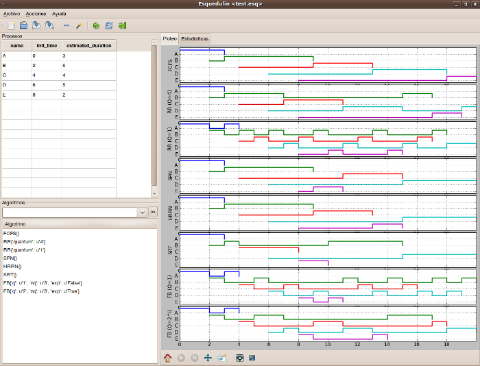
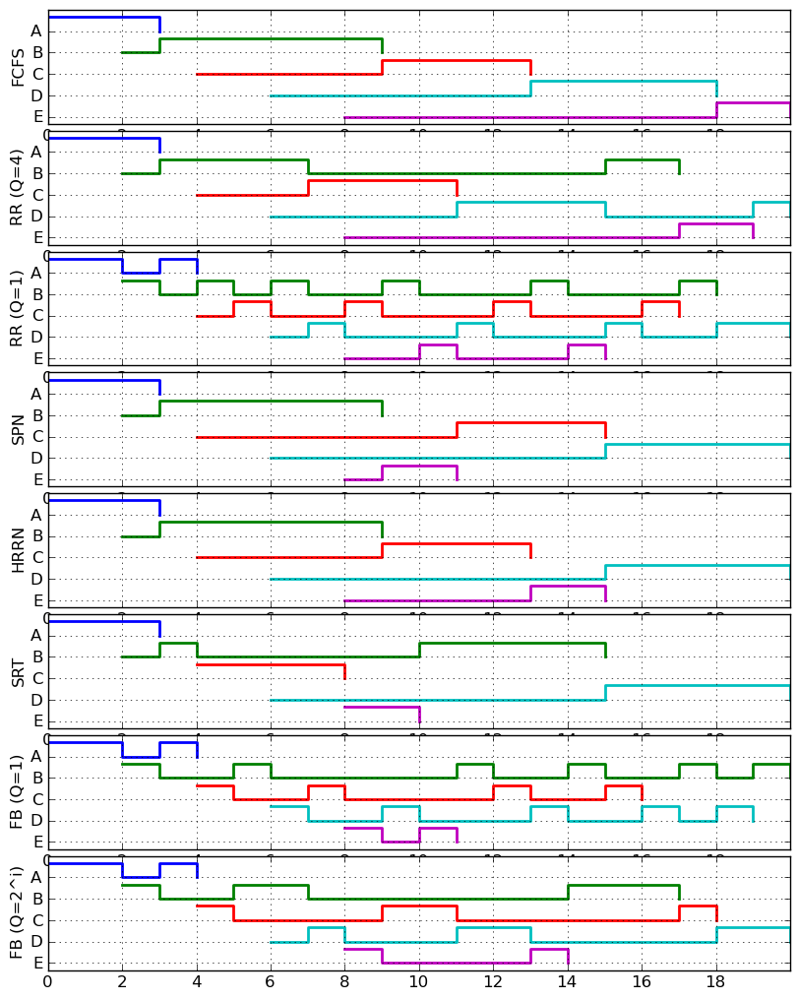

| Author: | Martín Gaitán <gaitan@gmail.com> |
|---|---|
| Version: | 1.0 |
| Date: | 2010-06-07 |
| Url: | http://code.google.com/p/esquedulin |
Esquedulin es un software para la simulación y el prototipado de algoritmos de planificación de corto plazo para sistemas monoprocesador. Fue desarrollado por Martín Gaitán como proyecto final para la promoción de la asignatura Sistemas Operativos II de la carrera Ingeniería en Computación, FCEFyN, UNC.
Esquedulin está desarrollado en Python (2.5 o superior) y depende de las siguientes bibliotecas:
En sistemas Debian/Ubuntu bastará:
$ sudo apt-get install python-matplotlib python-matplotlib-data python-numpy python-wxgtk
Asegúrese de tener Python y dichas bibliotecas instaladas en su sistema y podrá ejecutar Esquedulin:
$ python esquedulin.py
Multiples algoritmos implementados:
- First-Come, First-Serve
- Short process next
- Shortest remaining time
- Highest Response Rate Next
- Round Robin (con quantum configurable)
- Feedback (con quantum, exponencial y cantidad de 'buffers' configurables)
Extensibilidad mediante orientación a objetos. Facilmente se puede prototipar un nuevo algoritmo definiendo una función de selección y algunos datos descriptivos. Por ejemplo, la implementación de FCFC es este breve código:
class FCFS(Algorithm):
"""First Came First Serve is the most simple algorithm"""
def __init__(self,procesos=None):
Algorithm.__init__(self,procesos)
self.short_name = u'FCFS'
self.long_name = u'First-Come, First-Serve'
self.preferent = False
self.description = self.__doc__
def selection_function(self, x, y):
"""Doesn't alter the order of process in the queue"""
return 0
Ejecución paso a paso o hasta el final
Cálculo de estadísticas
Información del estado de cada proceso
Persistencia del entorno en archivo (*.esq)
Multiplataforma: Linux/Windows/OSx
Exportación de gráficos en multiples formatos (png, svg, eps, ...)

Extraído del libro Sistemas Operativos de Willian Stalling. Para la tabla de procesos siguiente. Puedes bajar este ejemplo aquí.
| name | init time | estimated duration |
| A | 0 | 3 |
| B | 2 | 6 |
| C | 4 | 4 |
| D | 6 | 5 |
| E | 8 | 2 |
y los siguientes algoritmos:
Se obtiene la siguiente salida
